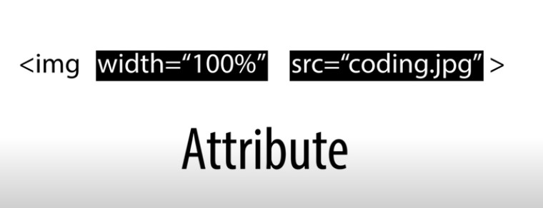

html 1일차
배준휘는 HTML에 대해서 배우고 있다. 오후 12:54 에 배운 두개의 태그는 글씨의 강조 와 언더라인. 즉, 밑줄!!! 이다.
닫히는 태그는 /를 붙이면 됩니다.
내가 보고있는 웹페이지의 소스를 보기 위해서는 우클릭 후 페이지 소스 확인
※h1이란 무엇인가?
h1이란 제목 headings. 6단계의 구획 제목이다. h1,h2,h3,h4,h5,h6 단계별로 불라불라.
ex)우와 h2임!!!
우와 h3임!!!
우와 h4임!!!
※줄바꿈은 어떻게 하면 될까?
줄바꿈은 br 즉, 라인브레이커와 p(paragraph) 즉, 단락. 이라는 태그가 있다.
p 태그는 어디서부터 어디까지가 단락 이라는 범위를 지정해줄수 있기 때문에 열림과 닫힘이 있다.
내가 선택한 요기서 요기까지가 단락이다. 라는 정리가 되기 때문에 괜춘~~한 기능이다.
※사진 첨부하는법
사진으로 대체

※항목 태그인 li 태그는 부모태그인 ul(Unordered List) 혹은 ol(Ordered List)(자동 숫자 메기기)을 가지고 있다.
html a태그는 뭘까요?